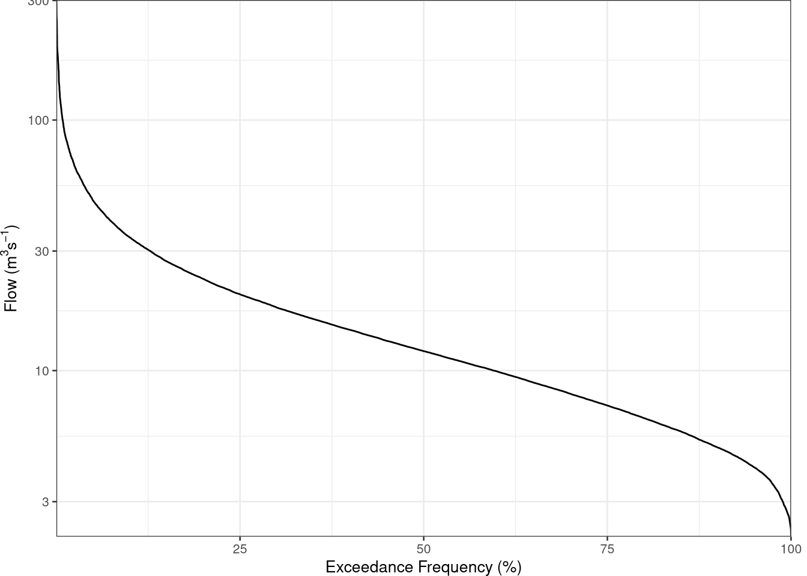
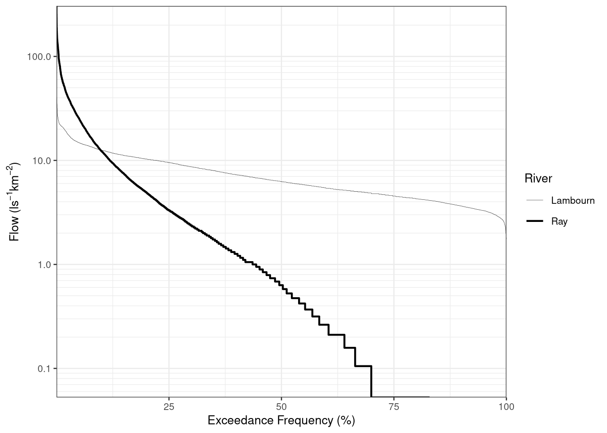

In this example we are going to use river flow data from the river Ngaruroro which is part of the International Data Set in the package hydroDrought. The dataset becomes accessible by loading the hydroDrought package.
library(tidyverse)
library(hydroDrought)
ngaruroro <- international %>%
filter(river == "Ngaruroro") %>%
select(data) %>%
unnest(data) The complete record (20 September 1963 to 8 October 2019) of daily data from River Ngaruroro at Kuripapango (NZ) are used here to construct a flow duration curve (FDC) based on a daily time step, \(\Delta t = 1\) day. The total number of \(\Delta t\) intervals is \(N = 20473\) days. Table 5.1 lists the first ten flow values. The first three columns show the date and the corresponding riverflow value, \(Q\).
The flow duration curve is constructed following the calculation steps as seen in the right part of the Table 5.1:
The rank, \(i\), of each value (column four in Table 5.1) is calculated (using the rank() function), which means that if the list is sorted, the rank will be its position. Here the series is sorted in descending order and the \(i^{th}\) largest value has rank \(i\) (i.e. the largest value has rank 1).
The exceedance frequency (column five in Table 5.1), \(EF_{Q_i}\) is calculated as: \[EF_{Q_i} = \frac{i} {N}\] which gives an estimate of the empirical exceedance frequency of the \(i^{th}\) largest event. \(EF_{Q_i}\) designates here the observed frequency when the flow, \(Q\), is larger than the flow value with rank \(i\), \(Q_i\) .
exceedance_frequency <- function(flow)
{
# current rank
i <- rank(-flow, ties.method = "min", na.last = "keep")
# largest rank in sample (= number of non-missing values)
N <- length(na.omit(flow))
# the exceedance frequency can be seen as the relative rank
return(i / N)
}
ngaruroro <- ngaruroro %>%
mutate(
rank = rank(-discharge, ties.method = "min"),
freq.exc = exceedance_frequency(discharge)
) Table 5.1 Calculation of daily flow duration curve for River Ngaruroro at Kuripapango, NZ
## # A tibble: 7 x 4
## time discharge rank freq.exc
## <date> <dbl> <int> <dbl>
## 1 1963-09-20 30.5 2501 0.124
## 2 1963-09-21 52.8 827 0.0409
## 3 1963-09-22 43.6 1228 0.0607
## 4 1963-09-23 37.3 1686 0.0834
## 5 1963-09-24 32.3 2240 0.111
## 6 1963-09-25 29.0 2736 0.135
## 7 1963-09-26 25.3 3482 0.172The sorted table columns are then plotted (Figure 5.2). The ordinate axis is here logarithmic.
ggplot(ngaruroro, aes(x = freq.exc * 100, y = discharge)) +
geom_line() +
scale_y_log10(expand = expansion()) +
scale_x_continuous(expand = expansion()) +
labs(x = "Exceedance Frequency (%)",
y = expression(paste("Flow (", m^{3}, s^{-1}, ")"))) +
theme(plot.margin = unit(c(0, 10, 0, 0), units = "pt"))Figure 5.2 Flow duration curve for River Ngaruroro at Kuripapango, NZ.
Values for a particular frequency, for example the 90-percentile (\(Q_{90}\)), can be obtained as the value of \(Q\) corresponding to the largest value of \(EF_{Q_i}\) that is less than or equal to the value of \(EF_{Q_i}\) sought for. A sample of corresponding values in this range is shown in Table 5.2, and the 90-percentile flow value is taken as 4.9 m3s-1. Alternatively, in case of large differences between successive values, a linear interpolation can be used.
Table 5.2 An extract of values corresponding to \(Q_{90}\).
## # A tibble: 9 x 4
## time discharge rank freq.exc
## <date> <dbl> <int> <dbl>
## 1 2001-03-03 4.94 18202 0.900
## 2 1999-01-16 4.94 18203 0.900
## 3 2005-11-24 4.94 18203 0.900
## 4 2013-01-18 4.94 18203 0.900
## 5 1990-12-29 4.93 18206 0.900
## 6 1968-02-17 4.93 18207 0.900
## 7 1994-03-28 4.93 18207 0.900
## 8 1998-03-29 4.93 18207 0.900
## 9 2002-03-26 4.93 18207 0.900The function lfquantile() calculates percentiles (quantiles) directly. The exact (interpolated) values for \(Q_{95}\), \(Q_{90}\) and \(Q_{80}\) would be:
lfquantile(ngaruroro$discharge, exc.freq = c(0.95, 0.9, 0.8))## Q95 Q90 Q80
## 4.10925 4.93600 6.46200The retrieved value for \(Q_{90}\) is 4.936 m3s-1, approximated to 4.94 m3s-1.
Comparing FDCs from different catchments requires standardization eg. dividing the discharges by the catchment area, the median or the mean discharge.
lambournRay <- international %>%
filter(river %in% c("Lambourn", "Ray")) %>%
select(river, area = catchment, data)
lambournRay <- lambournRay %>%
mutate(
data = map2(data, area, ~mutate(.x, rel.discharge = discharge * 1000 / .y))
) %>%
print()## # A tibble: 2 x 3
## river area data
## <chr> <dbl> <list>
## 1 Ray 19 <tibble [20,454 × 3]>
## 2 Lambourn 234 <tibble [20,973 × 3]>fdc <- lambournRay %>%
select(river, data) %>%
unnest(cols = data) %>%
group_by(river) %>%
mutate(
freq.exc = exceedance_frequency(rel.discharge)
) ggplot(fdc,
mapping = aes(x = freq.exc * 100, y = rel.discharge, size = river)) +
geom_step(direction = "vh") +
scale_x_continuous(expand = expansion()) +
scale_y_log10(breaks = breaks_log10_all(mult.base = 1),
minor_breaks = breaks_log10_all(),
expand = expansion()) +
scale_size_manual("River", values = c(0.1, 0.75)) +
labs(x = "Exceedance Frequency (%)",
y = expression(paste("Flow (", l, s^{-1}, km^{-2}, ")"))) 